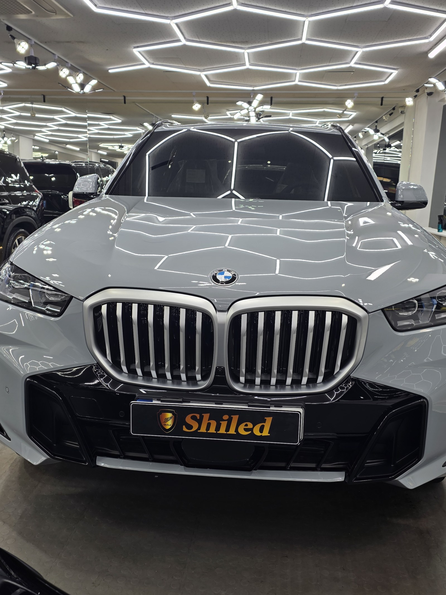
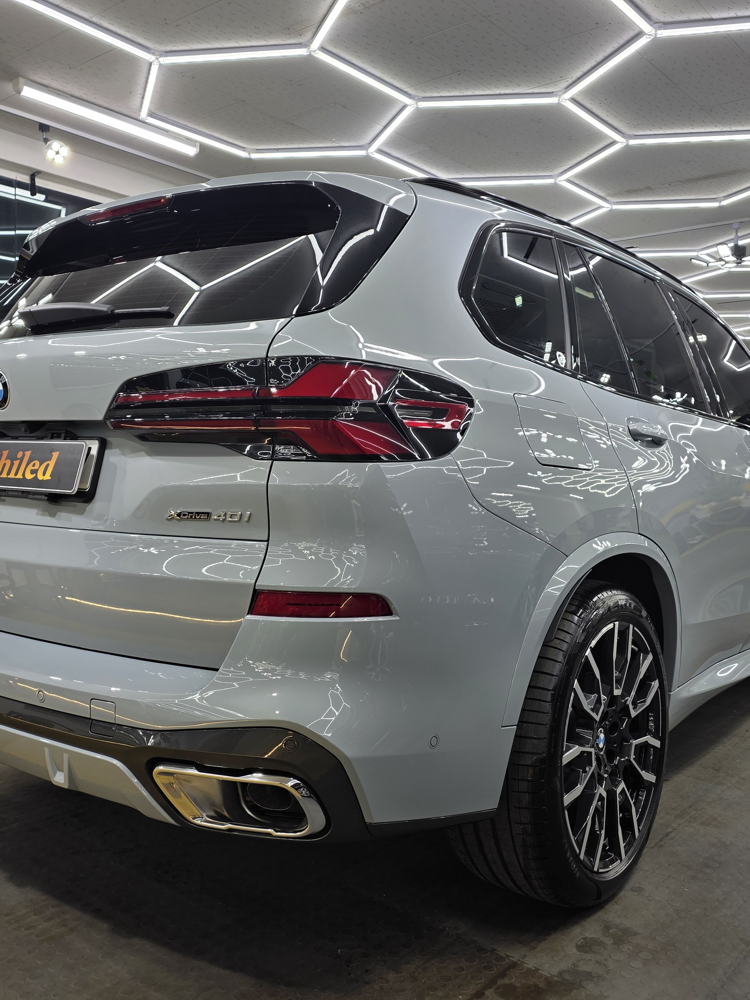
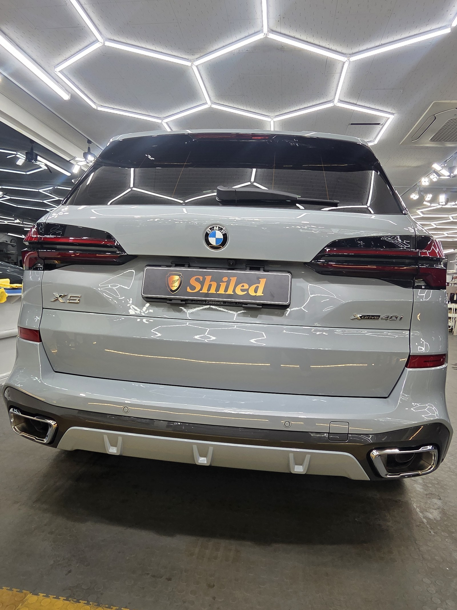
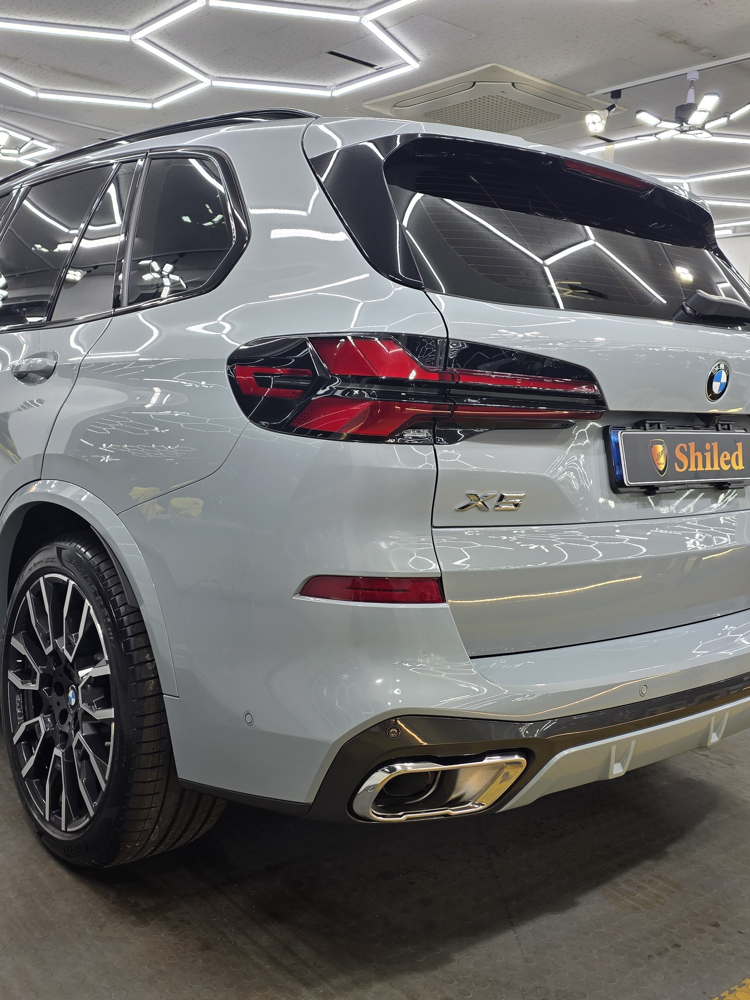
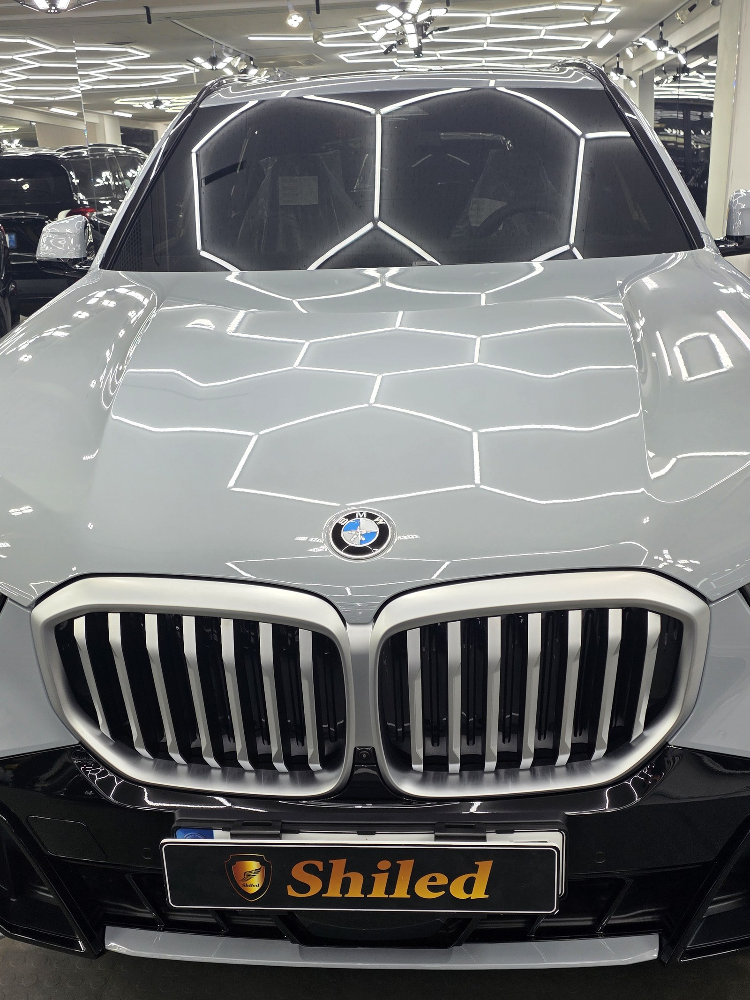
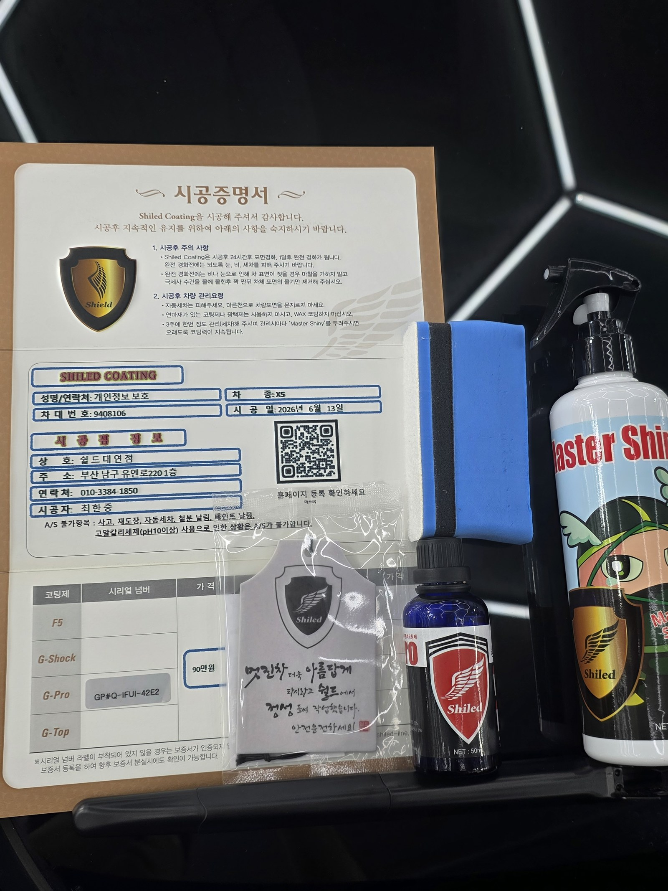

BMW X5 그레이입니다. 아직 출고 전, 새 차입니다.
이 차는 출고 전에 G-PRO 유리막코팅으로 진행했습니다.

대형 SUV에 G-PRO를 올리는 이유
X5처럼 크고 무거운 SUV는 스크래치 노출 환경이 다양합니다.
세차 빈도도 잦고, 오프로드나 좁은 주차장에서 흠집이 생기기 쉽습니다. 도장면이 가장 깨끗한 출고 전 지금 G-PRO로 경도를 높여두면 그 이후 관리가 한결 수월해집니다.
G-PRO는 어떤 코팅인가
G-PRO는 경도를 높여 스크래치 내성을 극대화하는 코팅입니다.
세차 브러시나 먼지에 의한 미세 스월링, 주차 중 생기는 잔기스까지 도장면이 버티는 힘을 키워줍니다. 코팅제는 대표가 화학공학 전공으로 직접 개발·제조한 제품입니다.

기술자의 팁
신차라고 바로 코팅을 올리지 않습니다. 운송·보관 중 묻은 미세 오염을 디테일링 세차와 탈지로 걷어낸 뒤에 올립니다. 깨끗한 바탕 위에 올려야 코팅이 제대로 밀착합니다.



시공증명서를 함께 드립니다
모든 시공 차량에 시공증명서를 드립니다.
차종·시공일·코팅제 시리얼 번호가 적혀 있고, 홈페이지에 등록해 보증을 받으실 수 있습니다. 이 차는 G-PRO 코팅으로 기록돼 있습니다.

차종·시공일·코팅제 시리얼이 기재된 시공증명서
자주 묻는 질문
Q. 대형 SUV에 G-PRO를 추천하는 이유는 뭔가요?
A. X5처럼 크고 무거운 SUV는 세차 빈도가 잦고 스크래치 노출 환경도 다양합니다. G-PRO로 경도를 높여두면 잔기스 저항력이 커져 관리가 한결 수월해집니다.
Q. G-PRO와 F5는 뭐가 다른가요?
A. F5는 색감 깊이를 끌어올려 글로시함을 살리고, G-PRO는 경도를 높여 스크래치 내성을 강화합니다. 흠집 방지가 우선이면 G-PRO를 우선 추천합니다.
Q. 신차코팅도 전처리를 하나요?
A. 합니다. 신차라도 운송·보관 중 미세 오염이 묻습니다. 디테일링 세차와 탈지로 표면을 정리한 뒤 코팅을 올려야 제대로 밀착합니다.
Q. 쉴드광택 위치와 예약은 어떻게 하나요?
A. 부산 남구 유엔로220 1F 쉴드광택입니다. 예약·상담은 010-3384-1850, 대표 최한중이 직접 상담하고 책임 시공합니다.
새 차일수록 시작점이 다릅니다. 가장 깨끗할 때 입혀두십시오.
제품을 직접 만드는 사람이 직접 시공합니다.
부산에서 신차코팅을 고민 중이시면 편하게 연락 주십시오.
어떤 차를 타냐보다 어떻게 타냐가 중요합니다~!
시공 중에는 전화를 받지 못할 때가 많습니다.
카카오톡으로 차종과 원하시는 시공을 남겨주시면 확인 후 답변드립니다.
쉴드광택 · 부산 남구 유엔로220 1F · 대표 최한중